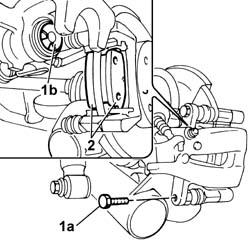

3310B62 REAR BRAKE PADS - REPLACE
- Path
- Procedures > 33 BRAKING SYSTEM > 3310 DISC BRAKES > 3310B REAR DISC BRAKES > 3310B62 REAR BRAKE PADS - REPLACE
- Kind
- repair procedure (removal / refitting; the operation number is the code)
- Applies to
- engines: 1.2 8v; all production periods
- Interactive page
- https://sloeber94.github.io/elrnDB-fPnd/en/#/169001742
Applies to: engines: 1.2 8v; all production periods
 Removing
Removing
 Refitting
RefittingPosition the vehicle on a lift.
Raise the vehicle.
Op. 4450B08 RIGHT REAR WHEEL R R
[Left or right]
1. Undo the fixing bolt (1a) and raise the caliper (1b).
2. Remove the two brake pads

Applies to: engines: 1.2 8v; all production periods
Refitting
RemovingFit the new brake pads in place and position the brake caliper.
Tighten the fixing bolt to torque.
Op. 4450B08 RIGHT REAR WHEEL R R
[Left or right]
Remove the vehicle from the lift.